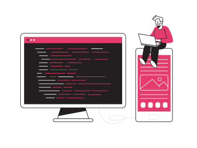

<div class="principal-container">
  <div class="data-container">
    <div class="about-me-container">
      <div class="title-container">
        <h2><span>></span>About me</h2>
        <div class="divisor"></div>
      </div>
      <p>
        Hi! JuanDi here, a dedicated programmer deeply passionate about both
        mathematics and coding. With proficiency in frontend and backend
        development, I specialize in Angular, Java with Spring Boot, NestJS, and
        database systems like MySQL and Oracle. What truly sets me apart is my
        unwavering commitment to clean code and best practices, notably the
        SOLID principles. I firmly believe that clean code is the cornerstone of
        maintainable and scalable applications. Today, I'll showcase how my love
        for mathematics influences my problem-solving skills and how this,
        combined with my expertise in clean coding and robust technologies, can
        elevate your website and make it stand out in the digital landscape.
      </p>
    </div>
    <div class="skills-container">
      <h4>Skills</h4>
      <ul>
        <li><i class="fa-brands fa-angular"></i> Angular</li>
        <li><i class="fa-brands fa-angular"></i> Springboot</li>
        <li><i class="fa-brands fa-angular"></i> Typescript</li>
        <li><i class="fa-brands fa-angular"></i> Javascript</li>
        <li><i class="fa-brands fa-angular"></i> Java</li>
        <li><i class="fa-brands fa-angular"></i> Sql</li>
        <li><i class="fa-brands fa-angular"></i> MySql</li>
        <li><i class="fa-brands fa-angular"></i> Oracle</li>
      </ul>
    </div>
  </div>
</div>


